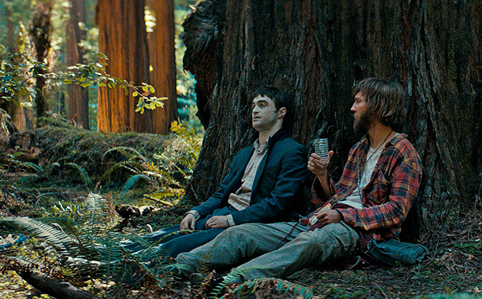
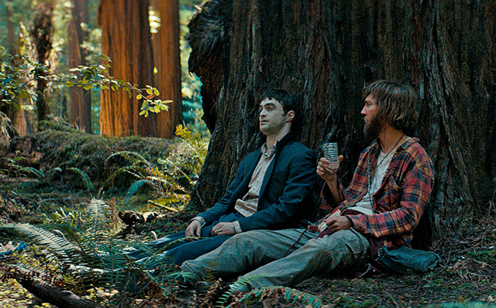

Swiss Army Man

Очень легкое и веселое кино. IMDB

Очень легкое и веселое кино. IMDB
Мужики отлично отожгли:
Сегодня мой словарный запас пополнился новым словом. Оказывается, получение аккаунта на госуслугах по почте или при личном посещении офиса ростелекома отличается не только способом его получения, но и качеством самого аккаунта. Аккаунт, полученный по почте, хотя и является "подтвержденным", но все же не настолько "подтвержденным", как аккаунт, полученный в офисе при личном посещении (такой тип требуется для входа на nalog.ru, например). И, хотя кажется, что подтверждение одного типа легко можно превратить в подтверждение другого, на практике оказывается, что это не так, и сперва необходимо провести процедуру "расподтверждения аккаунта", состоящую из телефонного звонка и обмена несколькими сообщениями по почте. Мне потребовалось два раза посетить МФЦ и два раза поговорить со службой техподдержки ГосУслуг, чтобы это понять. Может, кому-то окажется полезным :)
Водил сегодня первый раз лет за десять. Забыл уже, как это круто :)